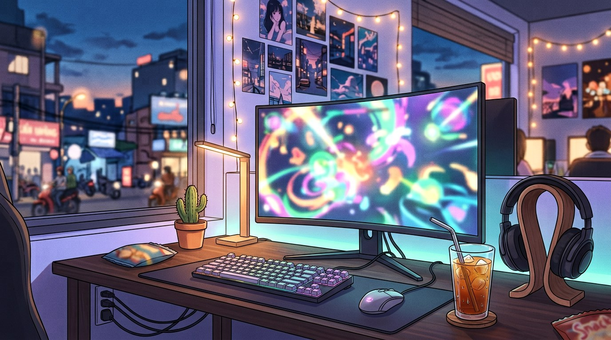

ISO 01
AniOS
Máy phòng net
Bản mặc định. Hyprland mở lên cùng Steam, Proton nướng sẵn trong ảnh, stack AI cục bộ và lớp ghi trên USB để cài thêm gói vẫn còn sau khi tắt máy.
--edition anios
Bản phối lại của Arch Linux · dựng cho máy phòng net
Cắm USB, khởi động, và bạn đứng ngay trong Hyprland — Steam cùng Proton đã nằm sẵn trong ảnh, driver NVIDIA 580xx cài trước, tiếng Việt gõ được từ phút đầu tiên. Không cần cài lại từng máy, không cần mạng để bắt đầu.
ĐANG CHẠY
Steam + Proton
không cần tải thêm
01 — chọn bản
Cả ba bản dựng từ cùng một profile nền, khác nhau ở thứ được nướng vào ảnh. Chọn theo việc bạn định làm, không phải theo cấu hình máy.
ISO 01
Máy phòng net
Bản mặc định. Hyprland mở lên cùng Steam, Proton nướng sẵn trong ảnh, stack AI cục bộ và lớp ghi trên USB để cài thêm gói vẫn còn sau khi tắt máy.
--edition anios
ISO 02
Riêng tư kiểu Tails
Chạy hoàn toàn trong RAM: tắt máy là sạch dấu vết, MAC ngẫu nhiên, đi qua Tor. Cố ý không có Steam, không lưu trữ, không AUR.
--edition aniterals
ISO 03
Chơi hết cỡ
Mọi thứ của AniOS, thêm Proton GE, VKD3D, protontricks, lớp kiểm chứng Vulkan 32-bit và công cụ theo dõi GPU cho máy có card rời.
--edition anix
Ảnh ISO khoảng 4–4,5 GB; ghi ra USB bằng dd, Rufus (chế độ DD)
hoặc balenaEtcher, dùng USB 16 GB trở lên.
02 — bên trong
Mỗi mục dưới đây là một chỗ mà bản Arch tươi thường làm người dùng bỏ cuộc giữa đường. AniOS làm sẵn, kèm lệnh kiểm tra khi có chuyện.
01
Compositor Wayland với dotfile Immaterial Impulse và Matugen. Sửa xong
Super+Shift+R là nạp lại, không phải khởi động lại máy.
02
Proton và Steam Runtime được tải sẵn lúc dựng ISO. Mở Steam là chơi, không phải chờ Valve cấp quyền tải.
03
Chặn nouveau, bật nvidia-drm.modeset=1, nhét module
vào initramfs và thêm tham số kernel cho mọi mục menu khởi động.
04
PipeWire + WirePlumber bật sẵn trong phiên, tự bỏ trạng thái tắt tiếng mà
BIOS để lại. Không có tiếng thì gọi anios-audio-check.
05
fcitx5 và ibus (Unikey) cùng có mặt, Ctrl+Space để chuyển,
anios-switch-im để đổi bộ gõ.
06
AniOS Minimal (Waybar) nhẹ cho iGPU đời cũ, và Immaterial Impulse
(Quickshell) Material 3 cho máy mạnh hơn. Đổi bằng
anios-switch-desktop hoặc Super+Alt+M.
07
Ollama bản Vulkan, llama-cpp, whisper-cpp, OpenVINO, kèm Jan AI và LM Studio.
08
Calamares chọn GRUB, theme SDDM và dotfiles; máy đích nhận luôn
anios-gpu-doctor để tự sửa lỗi driver.
03 — dành cho quán
Hai sự cố làm hỏng cả dàn máy mà driver đồ hoạ không liên quan: khách sau thấy dữ liệu của khách trước, và phiên chết lặp lại thì máy nằm im ở màn hình đăng nhập. AniOS xử lý cả hai, mặc định tắt cho tới khi bạn bật.
Downloads bị dọn khi bắt đầu phiên mới. Dotfile Hyprland,
~/Desktop và nhật ký chẩn đoán được giữ nguyên.
anios-cafe on --pos khoá cứng cả hai việc trên máy thu ngân:
giữ phiên đăng nhập phần mềm bán hàng và hoá đơn đang tính.
# xem trước, chưa xoá gì
$ anios-cafe clean --dry-run
# bật cho cả dàn máy khách
$ sudo anios-cafe on --system
# riêng máy thu ngân: không dọn, không reboot
$ anios-cafe on --pos
$ anios-cafe status
Vai trò: máy quầy thu ngân (POS)
Máy quầy: KHÔNG dọn dữ liệu, KHÔNG tự khởi động lại
04 — bắt đầu
Vào mục Releases, chọn bản hợp việc: AniOS cho phòng net, Anix cho máy chơi game, AniTails khi cần riêng tư.
Dùng Rufus (chế độ DD), balenaEtcher hoặc dd. USB 16 GB trở
lên; phần trống còn lại được AniOS dùng làm chỗ lưu dữ liệu.
Máy tự đăng nhập vào Hyprland. Mật khẩu phiên live và sudo là
1111 — đổi ngay nếu bạn dùng máy cho việc riêng.
sudo dd if=anios-<ngày>-x86_64.iso \
of=/dev/sdX bs=4M status=progress conv=fsyncsudo pacman -Syu --needed archiso git
sudo ./scripts/build-iso.sh05 — khi có chuyện
Toàn bộ mục này là những lỗi có thật trên máy thật, kèm lệnh chẩn đoán có sẵn trong ảnh. Không đoán mò.
Thường là do thiếu KMS sớm hoặc thiếu module trong initramfs. Chạy từ TTY
(Ctrl+Alt+F2):
anios-gpu-doctor # xem máy đang thiếu gì
sudo anios-gpu-doctor --fix
Trong lúc chờ, chọn phiên AniOS – Safe ở màn hình đăng nhập để có desktop không hiệu ứng.
dmesg đầy chữ “error” nhưng máy vẫn chạy bình thườngPhần lớn là lỗi firmware ACPI vô hại. anios-dmesg-check phân
loại thành ba mức VÔ HẠI / CHÚ Ý / CẦN SỬA và in đúng lệnh cần chạy.
anios-dmesg-check
anios-dmesg-check --boot # đọc toàn bộ từ lúc khởi độngĐồng hồ sai hoặc DNS hỏng đều gây ra đúng câu này. Kiểm tra và tự sửa:
anios-netcheck
sudo anios-netcheck --fix # gồm cả --fix-dnsSuper+Shift+A mở công cụ kiểm tra: card ALSA, unit, thiết bị
xuất, mức âm lượng và một tiếng bíp thử. Dựng lại dàn âm thanh bằng tay:
anios-audio-setup --force
wpctl set-default <id> # chuyển về loa / jack 3.5mmMật khẩu mặc định của tài khoản anios và sudo là
1111. Đây là môi trường live dùng chung — đừng để dữ liệu quan
trọng trong đó, và đổi mật khẩu nếu máy không nằm trong quán.